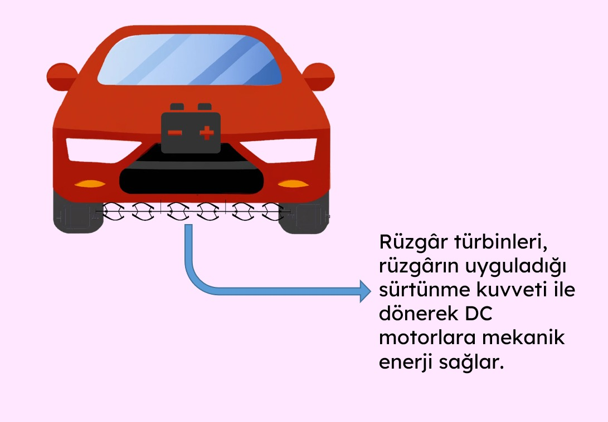
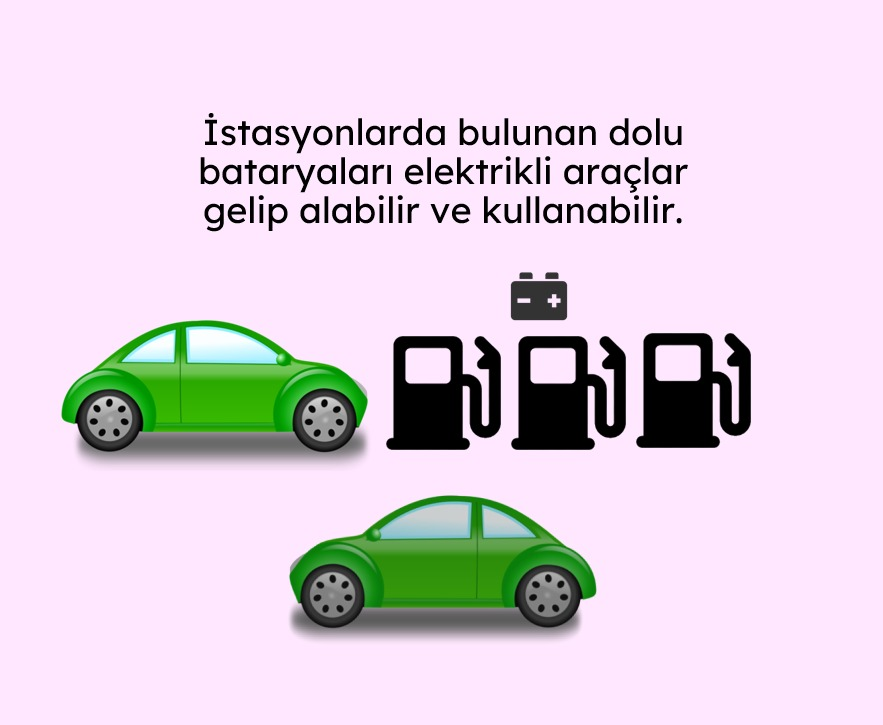

Dünyada kullanımı esnasında çevreye büyük zararlar veren fosil yakıtları kullanan araç sayısı günümüzde 1,3 milyarı aşmıştır. Fosil yakıtların ömrü ise gün geçtikçe azalmaktadır. Kömürün 114 yıl, doğan gazın 53 yıl, petrolün ise 51 yıl ömrü kaldığı düşünülmektedir.
Fosil yakıt kullanan araçlara alternatif olarak elektrikli araçların kullanımı da başlamıştır. Ancak günümüzde kullanımda olan fosil yakıt kullanan araç sayısı, elektrikli araçlara göre çok daha fazladır.
Projemizde fosil yakıt kullanan araçların kullanımı sırasında araca etki eden rüzgâr ve sürtünme kuvvetini aracın altına veya kaputuna yerleştirilebilecek dikey rüzgar türbinleri aracılığıyla elektrikli araçların kullanabileceği bataryaları doldurmak için kullanıyoruz ve belirli istasyonlara bırakarak elektrikli araçların kullanımına sunuyoruz.
 Fosil yakıtlı bir aracın sürtünme ve rüzgâr etkilerinden elektrik üreterek enerji tasarrufu yapıldı.
Ömrü gittikçe azalan fosil yakıtlı araçlar, projemiz sayesinde elektrik enerjisi üretiminde ve elektrikli araçlara geçişte önemli bir rol oynamış oldu.